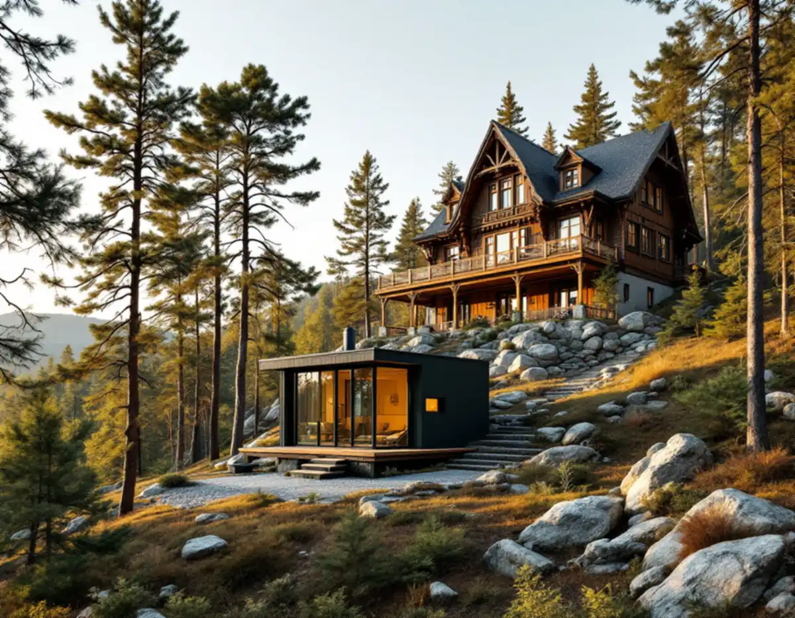
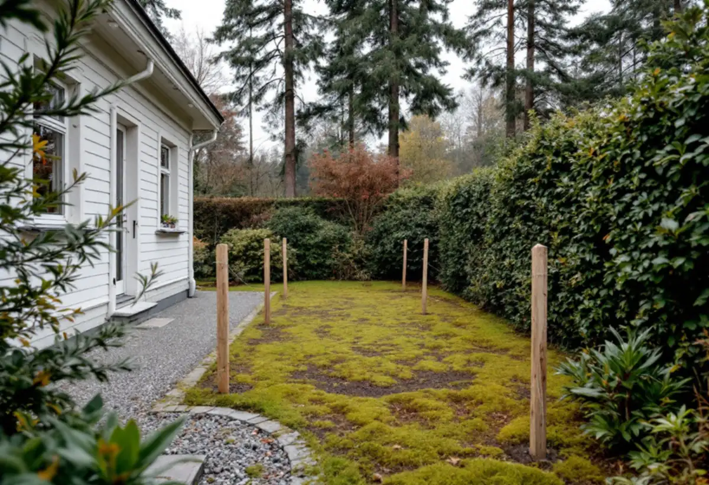
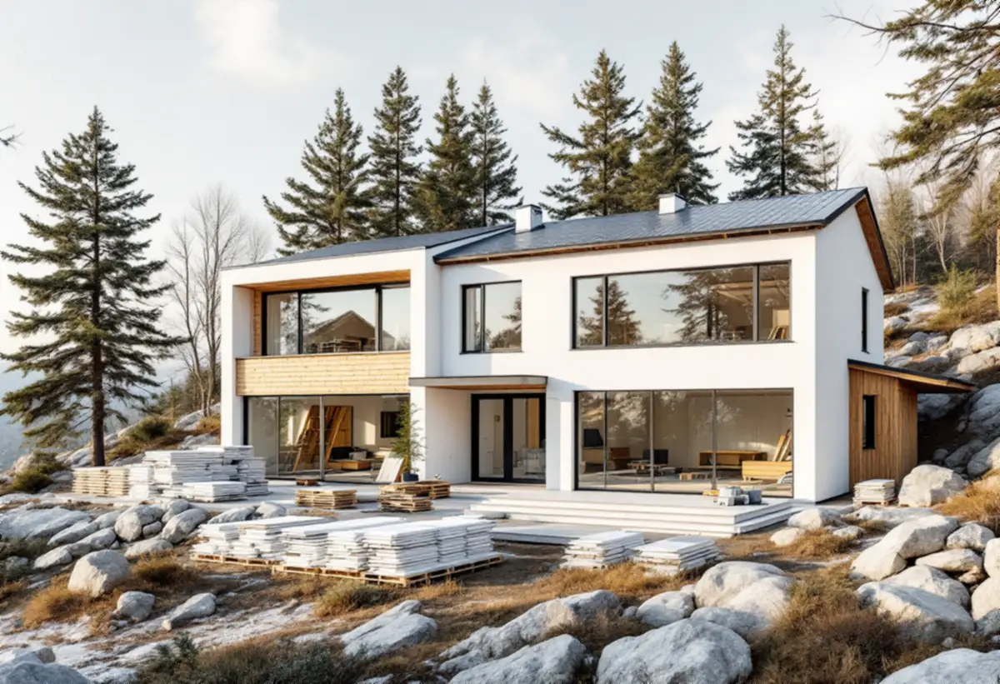

Gränserna
Grannar, kommunal mark och avståndet till Saltsjöbanan mäts in.

En tomt i Nacka kan gränsa mot en gata, en park, ett skogsområde eller Saltsjöbanan, och det styr var ett litet hus i trädgården får stå.
Beskriv jobbet kort.
Något blev fel. Kontrollera uppgifterna eller ring 08 12 410 276.
Vi tittar på jobbet på plats innan du får offert.
Du ser vad som ingår och vad det kostar.
Vi drar av ROT direkt och sköter ansökan.
Geal Entreprenad AB, Bromma. Org.nr 559303-7566.

Geal Entreprenad AB bygger komplementbostadshus nyckelfärdigt och börjar med gränserna runt tomten innan vi ritar huset.
Nackas kulturmiljöprogram beskriver hur Saltsjöbanan anlades av Knut A Wallenberg i samband med villastaden och badorten Saltsjöbaden, och hur ett antal villasamhällen växte fram längs banans sträckning från 1890-talet. Under 1910-talet förlängdes banan med sträckan Igelboda–Solsidan. Programmet beskriver områdena som terränganpassade, med oregelbundet svängda gator, bevarad natur och stora tomter. För Saltsjöbaden anger programmet att komplementbyggnader ska underordnas huvudbyggnaden och placeras och utformas så att gatubildens karaktär med friliggande hus i grönska behålls.
Närheten till spåret har en egen regel. Plan- och bygglagen kräver bygglov för en nybyggnad inom 30,0 meter från ett järnvägsspårs mitt (9 kap. 34 §), och Nacka kommun skriver att kravet gäller komplementbostadshus både inom och utanför detaljplan. Vill du placera huset närmare krävs ett medgivande från infrastrukturförvaltaren, och enligt 9 kap. 35 § räknas grannen då ha medgett åtgärden. Vi mäter därför avståndet från spårmitt innan placeringen bestäms.

Nacka kommun skriver att 4,5-metersregeln gäller alla sidor av tomten, även mot gata, park och annan allmän plats. Grannens skriftliga medgivande skickas inte in till kommunen utan hanteras mellan er. Ligger kommunägd mark på andra sidan gränsen, till exempel en gata, en park, ett grönområde eller ett natur- och skogsområde, krävs i stället ett skriftligt tillstånd från kommunen. Du ansöker via kommunens formulär med tydliga ritningar, och kommunen påpekar att ett beslut om närmare placering inte är ett godkännande av själva byggnaden.
Kommunens checklista visar vad som vägs in: huset ska kunna skötas och underhållas från den egna tomten, påverkan på markhöjd, avrinning och växtlighet på den kommunala marken ska redovisas, och huset får inte skymma sikten mot en allmän gata. Ett staket eller en häck i tomtgränsen ökar möjligheten att få tillstånd. Närmare än 2 meter från gränsen medger kommunen bara undantagsvis.
Ligger fastigheten i ett område som är särskilt värdefullt enligt 8 kap. 13 § plan- och bygglagen utökas lovplikten. Nacka kommun skriver att alla komplementbyggnader och komplementbostadshus då kräver bygglov och dessutom ska vara planenliga, alltså rymmas inom detaljplanens byggrätt. Det gäller även sådana byggnader som tidigare kallades friggebod.
Kommunens webbkarta visar de miljöer och objekt som kommunen hittills har bedömt som särskilt kulturhistoriskt värdefulla. Lila markering betyder särskilt höga kulturvärden. Orange markering betyder att ett arbete med att bedöma värdena kan pågå, och då ber kommunen dig kontakta stadsbyggnadsservice. Region Stockholm listar Storängen (AB 54), Saltsjöbadens centrala delar (AB 122) och farledsmiljön Nacka–Norra Boo–Vaxholm–Oxdjupet–Lindalssundet (AB 51) bland riksintressena för kulturmiljövården. Hur en tillbyggnad prövas i Storängen och Saltsjöbaden beskrivs under tillbyggnad i Nacka.
Ska tomten få både en ny villa och ett litet hus behöver ordningen planeras. Nacka kommun skriver att det krävs minst ett interimistiskt slutbesked för en- eller tvåbostadshuset innan ett lovfritt komplementbostadshus kan uppföras i samband med nybyggnaden. Kommunen påpekar också att nybyggnad kan betyda att flytta en befintlig byggnad till en ny plats, och att huset ska stå fristående och vara mindre än byggnaden det kompletterar.
För en- och tvåbostadshus får en lovfri åtgärd strida mot detaljplanen, utom där fastigheten har utökad lovplikt genom lagen, detaljplanen eller områdesbestämmelser. Installationer för vatten, avlopp och ventilation kräver enligt plan- och byggförordningen anmälan även när huset är lovfritt. Hur anslutningen till kommunalt VA går till beskrivs under byggföretag i Nacka, och ett helt nytt bostadshus under nybyggnad av villa. Mått och paragrafer finns i reglerna för attefallshus.
Grannar, kommunal mark och avståndet till Saltsjöbanan mäts in.
Vi kontrollerar kulturmiljökartan och detaljplanen.
Grannens ja, kommunens tillstånd eller infrastrukturförvaltarens medgivande.
VA, ventilation och eldstad anmäls före arbetet.
Grund, stomme och installationer fram till nyckelfärdigt.
Genomgång av huset och beslut som ska sparas.
Bland arbetena som inte ger rotavdrag på ett småhus nämner Skatteverket att bygga ett helt nytt hus, en friggebod, ett garage, ett växthus eller en liknande fristående byggnad. Ett komplementbostadshus i trädgården hör till den gruppen, så vi räknar huset utan avdrag.
Storlek och standard, kök och badrum, grundläggning på berg eller i sluttning, hur långt det är till befintliga ledningar och hur material kan bäras eller lyftas in på en kuperad tomt. Efter ett kostnadsfritt platsbesök får du ett skriftligt kostnadsförslag.
Komplementbostadshus på tomten.
Attefallshus →Takbyte, takbesiktning och plåtarbeten.
Takläggare i Nacka →Saltsjöbaden, Boo och Älta.
Takrenovering i Nacka →Villastäder, sommarhus och radhus.
Badrumsrenovering i Nacka →VA, LTA och dagvatten på tomten.
Byggföretag i Nacka →Uthus, räcken och plåt kring villan.
Fasadmålning i Nacka →Sommarvillor, stugor och villor i Nacka.
Fasadrenovering i Nacka →Villasamhällena vid Saltsjöbanan.
Fönsterbyte i Nacka →Linoljefärg, väder och verkstad för villafönster.
Fönsterrenovering i Nacka →Sommarvillor, stugor och hus med källarplan.
Golvläggare i Nacka →Slipa och olja trägolvet.
Golvslipning i Nacka →Radhuskök, sekelskiftesvillor och vedspis.
Köksrenovering i Nacka →Panelvillor och sommarnöjen i Nacka.
Målare i Nacka →Farledens plåttak och Saltsjöbadens villor.
Plåtslagare i Nacka →Verandor, panel och altaner.
Snickare i Nacka →Skorsten, huvar och genomföringar vid nytt tak.
Takbyte i Nacka →Ny tapet och dold dekor i äldre villor.
Tapetsering i Nacka →Strandskydd och villasamhällen.
Tillbyggnad i Nacka →Nytt värmesystem när huset ändå görs om.
Totalrenovering i Nacka →Eller ring 08 12 410 276, mån–fre 08–17.
Beskriv jobbet kort.
Något blev fel. Kontrollera uppgifterna eller ring 08 12 410 276.